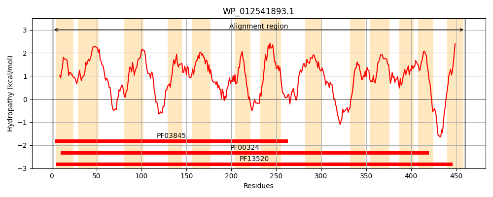
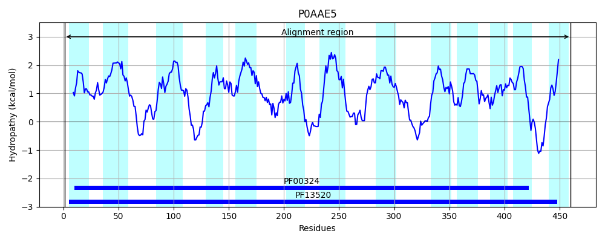
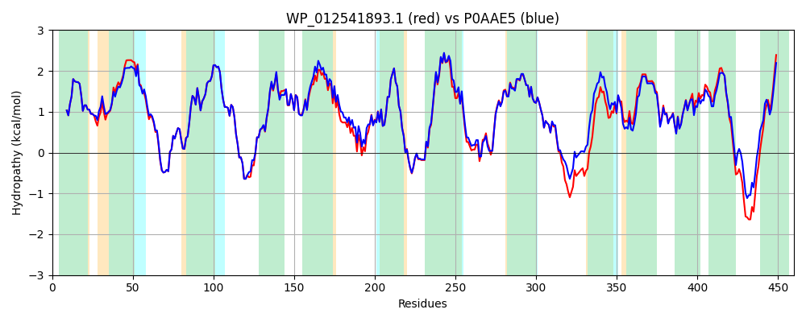

Hit Accession: P0AAE5
Hit TCID: 2.A.3.2.8
Hit Description: gnl|BL_ORD_ID|8660 gnl|TC-DB|P0AAE5|2.A.3.2.8 Putative arginine/ornithine antiporter OS=Escherichia coli (strain K12) GN=ydgI PE=1 SV=1
Mach Len: 460
e:0.000000
Query TMS Count : 13
Hit TMS Count: 13
TMS-Overlap Score: 12.100000
Predicted Substrates:CHEBI:2643;arginine
BLAST Alignment:
Score: 2094 , Bit scores: 811 bits, E-value: 0.0e+00, Alignment length: 460, Percentage identity: 88
Query: 1 MEKKLGLSALTALVLSSMLGAGVFSLPQNMAAVASPSALLIGWAITGVGILFLAFAMLLLTRIRPDLDGGIFTYAREGFGELIGFCSAWGYWLCAVIANVSYLVIVFSALSFFTDTPELRLFGDGNTWQSIAGASVLLWVVHFLVLRGVQTAAGINLVATLAKLLPLGAFIALAALAFQLDTFRLDFRGLALGIPVWEQVKNTMLITLWVFIGVEGAVVVSARARHKRDVGRATLLAVLSALTVYLLVTLLSLGVVPRSELAGMRNPSMAGLMVNMMGSWGEIVIAAGLIVSVCGAYLSWTIMAAEVPFLAATHKAFPRLFARQNSNNAPSASLWLTNISVQVSLVLIWLTGSDYGTLLTIASEMILVPYLLVGAFLLKIATRPLHKAVGIGACIYGLWLLYASGPVHLLLSVVLYAPGLLVFLYARRTHQHDRSLKRRELALIGLLLVAAVPATWMLVG 460
MEKKLGLSALTALVLSSMLGAGVFSLPQNMAAVASP+ALLIGW ITG GIL LAFAML+LTRIRP+LDGGIFTYAREGFGELIGFCSAWGYWLCAVIANVSYLVIVFSALSFFTDTPELRLFGDGNTWQSI GAS LLW+VHFL+LRGVQTAA INLVATLAKLLPLG F+ LA + F+LDTF+LDF GLALG+PVWEQVKNTMLITLWVFIGVEGAVVVSARAR+KRDVG+ATLLAVLSAL VYLLVTLLSLGVV R ELA +RNPSMAGLMV MMG WGEI+IAAGLIVSVCGAYLSWTIMAAEVPFLAATHKAFPR+FARQN+ APSASLWLTNI VQ+ LVLIWLTGSDY TLLTIASEMILVPY LVGAFLLKIATRPLHKAVG+GACIYGLWLLYASGP+HLLLSVVLYAPGLLVFLYAR+TH HD L R+E+ LIG+LL+A+VPATWMLVG
Sbjct: 1 MEKKLGLSALTALVLSSMLGAGVFSLPQNMAAVASPAALLIGWGITGAGILLLAFAMLILTRIRPELDGGIFTYAREGFGELIGFCSAWGYWLCAVIANVSYLVIVFSALSFFTDTPELRLFGDGNTWQSIVGASALLWIVHFLILRGVQTAASINLVATLAKLLPLGLFVVLAMMMFKLDTFKLDFTGLALGVPVWEQVKNTMLITLWVFIGVEGAVVVSARARNKRDVGKATLLAVLSALGVYLLVTLLSLGVVARPELAEIRNPSMAGLMVEMMGPWGEIIIAAGLIVSVCGAYLSWTIMAAEVPFLAATHKAFPRIFARQNAQAAPSASLWLTNICVQICLVLIWLTGSDYNTLLTIASEMILVPYFLVGAFLLKIATRPLHKAVGVGACIYGLWLLYASGPMHLLLSVVLYAPGLLVFLYARKTHTHDNVLNRQEMVLIGMLLIASVPATWMLVG 460 | Protein Hydropathy Plots: |
|---|
|  |  |
Pairwise Alignment-Hydropathy Plot:
|
|---|
|  |